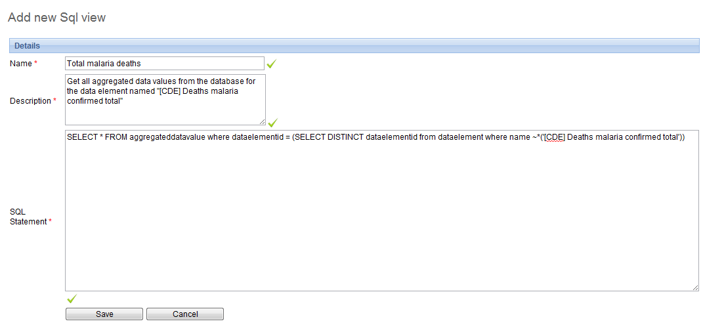

The SQL View functionality of DHIS2 will store the SQL view definition internally, and then materialize the view when requested.
Database administrators must be careful about creating database views directly in the DHIS 2 database. For instance, when the resource tables are generated, all of them will first be dropped and then re-created. If any SQL views depend on these tables, an integrity violation exception will be thrown and the process will be aborted.
The SQL views are dropped in reverse alphabetical order based on their names in DHIS2, and created in regular alphabetical order. This allows you to have dependencies between SQL views, given that views only depend on other views which come earlier in the alphabetical order. For instance, "ViewB" can safely depend on "ViewA". Otherwise, having views depending on other view result in an integrity violation error.
To create a new SQL view, click Apps > Data administration >SQL view and click Add new.
|  |
The "Name" attribute of the SQL view will be used to determine the name of the table that DHIS2 will create when the view is materialized by the user. The "Description" attribute allows one to provide some descriptive text about what the SQL view actually does. Finally, the "SQL statement" should contain the SQL view definition. Only SQL "SELECT" statements are allowed and certain sensitive tables (i.e. user information) are not accessible Press "Save" to store the SQL view definition.
In order to utilize the SQL views, simply click the view and from the context menu, choose "Execute query". Once the process is completed, you will be informed that a table has been created. The name of the table will be provided, and is composed from the "Description" attribute provided in the SQL view definition. Once the view has been generated, you can view it by clicking the view again, and selecting "Show SQL View".
![[Tip]](../Resources/tip.png)
|
Tip |
|---|---|
|
If you have a view which depends on another view, you should be careful about how the views are named. When analytics is run on the DHIS2 server, all views must be dropped, and are recreated. When analytics starts, the views are dropped in alphabetical order, and then recreated in reverse alphabetical order. Thus, if view A depends on view B, it must appear before view B in alphabetical order. If it appears after view B in alphabetical order, analytics may fail, as the view with dependencies will not be dropped in the correct order. |